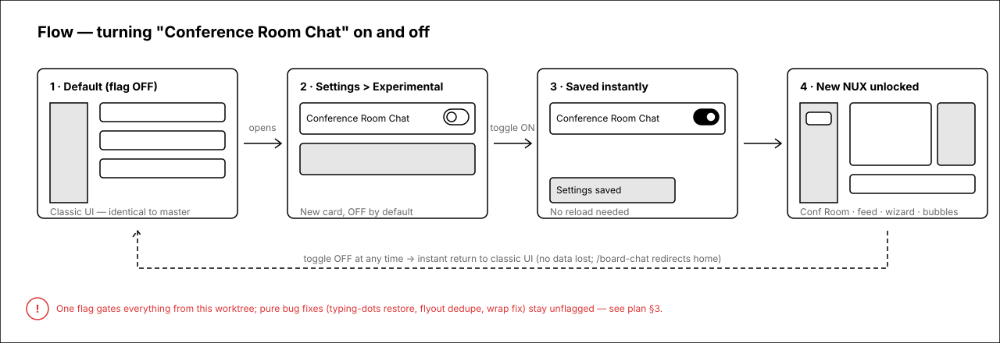
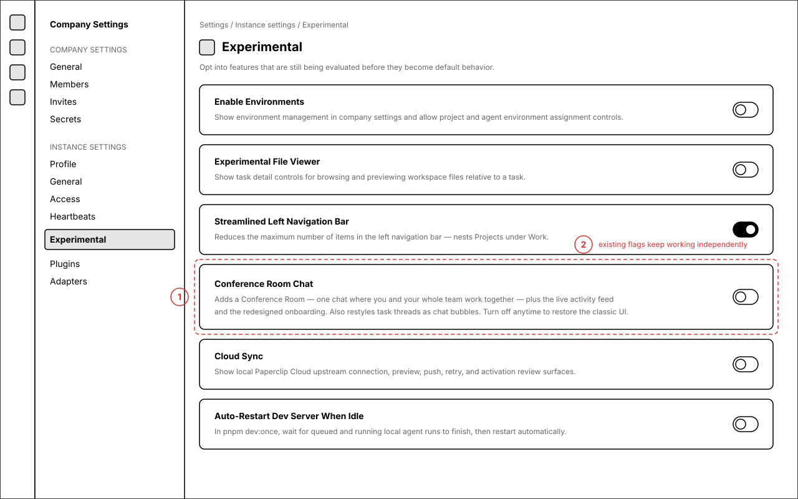
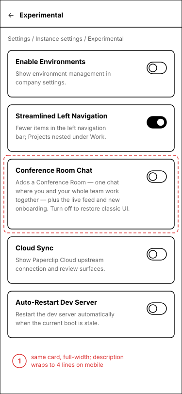
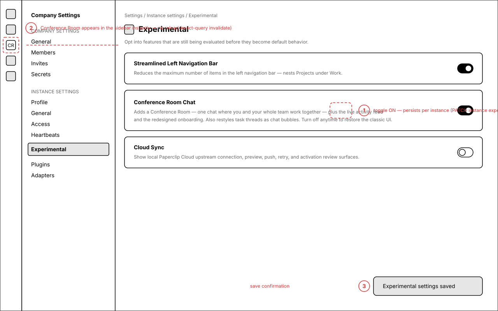
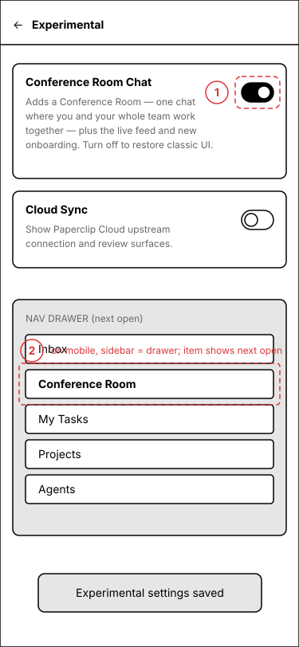
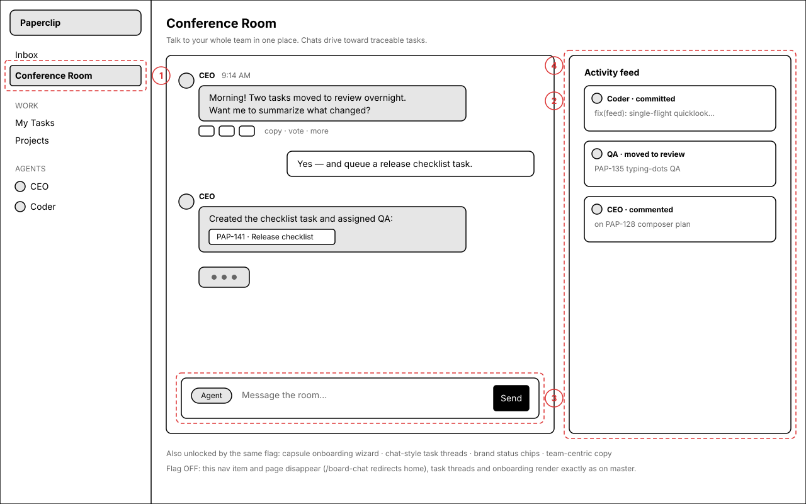
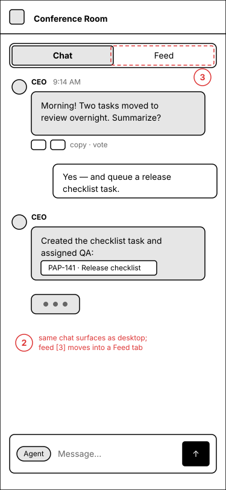

"Conference Room Chat" — experimental flag interaction
One new instance-level experimental flag, enableConferenceRoomChat, gates every
user-visible change from the PAP-46-nux-tweaks worktree: the Conference Room chat page,
the live activity feed, the capsule onboarding wizard, chat-style task threads, brand status chips,
and the team-centric copy. OFF by default — with the flag off the app looks and behaves exactly
like master. It follows the same pattern the board approved for the Streamlined Left Navigation flag.
Interaction flow
Default OFF → settings toggle → instant unlock → reversible at any time.

Settings > Instance settings > Experimental — flag OFF (default)
The new card sits in the existing experimental list, right after "Streamlined Left Navigation Bar".


Regions
- New "Conference Room Chat" card — title + two-line description + toggle, identical chrome to every other experimental card
- Existing flags are untouched and compose independently (e.g. Streamlined Left Nav can be on while this is off)
Proposed two-line description
Mobile: same card full-width; description wraps to four lines.
Toggling ON — instant, no reload
Toggle persists via the existing PATCH instance-experimental-settings route; react-query invalidation makes the sidebar pick it up immediately.


Regions
- Toggle flips ON — saved per instance, same persistence as all other experimental flags
- "Conference Room" appears in the app sidebar instantly (on mobile: visible the next time the nav drawer opens)
- Save confirmation toast
What the flag unlocks
Everything user-visible from this worktree, as one switch.


Regions
- "Conference Room" sidebar nav item +
/board-chatroute - Chat surface — agent bubbles with name/icon header + action row, task chips, typing dots, user bubbles
- Live activity feed rail (on mobile: a "Feed" tab)
- Shared ChatComposer — Agent/Plan mode chip, translucent surface
/api/board/chat/stream server endpoint (403 when off).Gating matrix (summary)
Full detail in the plan document on the issue. Tier C ships unflagged — pure bug fixes that master wants anyway.
| Tier | Surface | Mechanism when flag is OFF |
|---|---|---|
| A — new surfaces | /board-chat route + "Conference Room" nav item | Nav item hidden; route redirects to company home |
| Activity feed, artifacts panel, board-level /artifacts route | Unreachable (only mounted inside gated surfaces) | |
| POST /api/board/chat/stream | Server returns 403 unless flag enabled | |
| B — modified in place | Capsule onboarding wizard | Renders legacy (master) wizard variant |
| Task thread bubbles, status chips, composer chrome, @task picker | Branch to master presentation per component | |
| Team-centric copy (sidebar/menu strings) | Classic copy strings | |
| C — unflagged | Pure bug fixes: typing-dots restore, onboarding-dismiss fix, quicklook single-flight, composer wrap fix; dev-only DesignGuide | Always on (board can veto any into tier B) |
Open questions
- Tier C exceptions — OK to leave the four pure bug fixes unflagged, or do you want literally everything behind the flag?
- Card position — proposed right after "Streamlined Left Navigation Bar" (both are NUX flags). Alphabetical or bottom-of-list also fine.
- Flag interplay — if both "Conference Room Chat" and "Streamlined Left Navigation" are on, Conference Room slots into the streamlined nav under the top group. Confirm that's the expected composition.